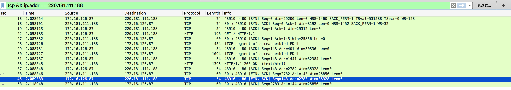

TCP/IP协议详解
TCP连接建立，三次握手&四次挥手
关于连接建立
首先Client端发送连接请求报文，Server段接受连接后回复ACK报文，并为这次连接分配资源。Client端接收到ACK报文后也向Server段发生ACK报文，并分配资源，这样TCP连接就建立了。
关于连接关闭
中断连接端可以是Client端，也可以是Server端。
假设Client端发起中断连接请求，也就是发送FIN报文。Server端接到FIN报文后，意思是说"我Client端没有数据要发给你了"，但是如果你还有数据没有发送完成，则不必急着关闭Socket，可以继续发送数据。所以你先发送ACK，"告诉Client端，你的请求我收到了，但是我还没准备好，请继续你等我的消息"。这个时候Client端就进入FIN_WAIT状态，继续等待Server端的FIN报文。当Server端确定数据已发送完成，则向Client端发送FIN报文，"告诉Client端，好了，我这边数据发完了，准备好关闭连接了"。Client端收到FIN报文后，"就知道可以关闭连接了，但是他还是不相信网络，怕Server端不知道要关闭，所以发送ACK后进入TIME_WAIT状态，如果Server端没有收到ACK则可以重传。“，Server端收到ACK后，"就知道可以断开连接了"。Client端等待了2MSL后依然没有收到回复，则证明Server端已正常关闭，那好，我Client端也可以关闭连接了。Ok，TCP连接就这样关闭了！
连接建立流程&状态图

- 整个过程Client端所经历的状态如下：

- 整个过程Server端所经历的状态如下：

为什么连接的时候是三次握手，关闭的时候却是四次握手？
因为当Server端收到Client端的SYN连接请求报文后，可以直接发送SYN+ACK报文。其中ACK报文是用来应答的，SYN报文是用来同步的。但是关闭连接时，当Server端收到FIN报文时，很可能并不会立即关闭SOCKET，所以只能先回复一个ACK报文，告诉Client端，"你发的FIN报文我收到了"。只有等到我Server端所有的报文都发送完了，我才能发送FIN报文，因此不能一起发送。故需要四步握手。
为什么TIME_WAIT状态需要经过2MSL(最大报文段生存时间)才能返回到CLOSE状态？
虽然按道理，四个报文都发送完毕，我们可以直接进入CLOSE状态了，但是我们必须假象网络是不可靠的，有可以最后一个ACK丢失。所以TIME_WAIT状态就是用来重发可能丢失的ACK报文。
TCP连接状态详解
LISTEN： 侦听来自远方的TCP端口的连接请求
SYN-SENT： 再发送连接请求后等待匹配的连接请求
SYN-RECEIVED：再收到和发送一个连接请求后等待对方对连接请求的确认
ESTABLISHED： 代表一个打开的连接
FIN-WAIT-1： 等待远程TCP连接中断请求，或先前的连接中断请求的确认
FIN-WAIT-2： 从远程TCP等待连接中断请求
CLOSE-WAIT： 等待从本地用户发来的连接中断请求
CLOSING： 等待远程TCP对连接中断的确认
LAST-ACK： 等待原来的发向远程TCP的连接中断请求的确认
TIME-WAIT： 等待足够的时间以确保远程TCP接收到连接中断请求的确认
CLOSED： 没有任何连接状态
man netstat 的文档说明
CLOSED: The socket is not in use.
LISTEN: The socket is listening for incoming connections. Unconnected
listening sockets like these are only displayed when using the -a option.
SYN_SENT: The socket is actively trying to establish a connection to a
remote peer.
SYN_RCVD: The socket has passively received a connection request from a
remote peer.
ESTABLISHED: The socket has an established connection between a local
application and a remote peer.
CLOSE_WAIT: The socket connection has been closed by the remote peer,
and the system is waiting for the local application to close its half of
the connection.
LAST_ACK: The socket connection has been closed by the remote peer, the
local application has closed its half of the connection, and the system
is waiting for the remote peer to acknowledge the close.
FIN_WAIT_1: The socket connection has been closed by the local
application, the remote peer has not yet acknowledged the close, and the
system is waiting for it to close its half of the connection.
FIN_WAIT_2: The socket connection has been closed by the local
application, the remote peer has acknowledged the close, and the system
is waiting for it to close its half of the connection.
CLOSING: The socket connection has been closed by the local application
and the remote peer simultaneously, and the remote peer has not yet
acknowledged the close attempt of the local application.
TIME_WAIT: The socket connection has been closed by the local
application, the remote peer has closed its half of the connection, and
the system is waiting to be sure that the remote peer received the last
acknowledgement.
常用网络命令
- netstat
- lsof
tcpdump
使用tcpdump工具，查看tcp连接过程 www.baidu.com 域名解析出 220.181.111.188 使用wget http://220.181.111.188 下载百度首页html tcpdump | grep '220.181.111.188' 日志如下
1.22:56:55.806247 IP neo2008cat.43906 > 220.181.111.188.http: Flags [S], seq 460242205, win 29200, options [mss 1460,sackOK,TS val 4294936264 ecr 0,nop,wscale 7], length 0 2.22:56:55.830717 IP 220.181.111.188.http > neo2008cat.43906: Flags [S.], seq 1048351813, ack 460242206, win 8192, options [mss 1452,sackOK,nop,nop,nop,nop,nop,nop,nop,nop,nop,nop,nop,wscale 5], length 0 3.22:56:55.830732 IP neo2008cat.43906 > 220.181.111.188.http: Flags [.], ack 1, win 229, length 0 4.22:56:55.830802 IP neo2008cat.43906 > 220.181.111.188.http: Flags [P.], seq 1:143, ack 1, win 229, length 142: HTTP: GET / HTTP/1.1 5.22:56:55.855555 IP 220.181.111.188.http > neo2008cat.43906: Flags [.], ack 143, win 808, length 0 6.22:56:55.857868 IP 220.181.111.188.http > neo2008cat.43906: Flags [P.], seq 1:401, ack 143, win 808, length 400: HTTP: HTTP/1.1 200 OK 7.22:56:55.857875 IP neo2008cat.43906 > 220.181.111.188.http: Flags [.], ack 401, win 237, length 0 8.22:56:55.857870 IP 220.181.111.188.http > neo2008cat.43906: Flags [P.], seq 401:1441, ack 143, win 808, length 1040: HTTP 9.22:56:55.857882 IP neo2008cat.43906 > 220.181.111.188.http: Flags [.], ack 1441, win 253, length 0 10.22:56:55.857977 IP 220.181.111.188.http > neo2008cat.43906: Flags [P.], seq 1441:2782, ack 143, win 808, length 1341: HTTP 11.22:56:55.857980 IP neo2008cat.43906 > 220.181.111.188.http: Flags [.], ack 2782, win 276, length 0 12.22:56:55.858047 IP 220.181.111.188.http > neo2008cat.43906: Flags [F.], seq 2782, ack 143, win 808, length 0 13.22:56:55.858556 IP neo2008cat.43906 > 220.181.111.188.http: Flags [F.], seq 143, ack 2783, win 276, length 0 14.22:56:55.883276 IP 220.181.111.188.http > neo2008cat.43906: Flags [.], ack 144, win 808, length 0 1~3行:客户端建立连接的过程,客户端发送syn,服务器发送syn+ack,客户端发送ack 连接建立 4~11行:客户端和服务器端数据传输的过程 12～14行:服务端与客户端连接断开的过程，服务器端发送fin包(此时服务器连接状态为FIN-WAIT-1),客户端发送fin+ack包,服务发送ack包(此时服务器连接状态为TIME-WAIT,同时收到fin+ack包,所以没有FIN-WAIT-2状态),等待两个2msl后,服务器连接CLOSEDtcpdump -w tcpdump.cap保存tcpdump的结果,导入到wireshark中,以下是wireshark的截图: 
wireshark 工具
- ifconfig
- nslookup
- ping
- telnet
- traceroute
- wget
- curl
- scp
- mtr
- host
- whois
- ifdown & ifup
- dhclient
- nc
- ss
- ethereal